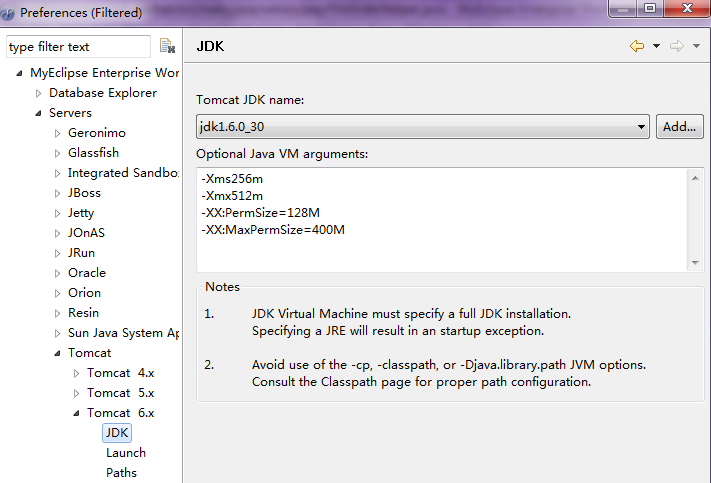

tomcatConfig
###tomcat内存配置
####Linux
1、cd tomcat/bin
进入到tomcat的bin目录
2、vi catalina.sh
在文档的第一行或者注释内容结束后加上JAVA_OPTS,如果已经存在JAVA_OPTS，则更改其属性值。
如：JAVA_OPTS=””-Xms1024m -Xmx4096m -Xss1024K -XX:PermSize=512m -XX:MaxPermSize=2048m”
3、:wq!
保存退出。重启系统。
####Windows—执行startup.bat启动tomcat
1、找到tomcat的bin目录的catalina.bat文件
2、编辑catalina.bat文件
在文档的第一行或者注释内容结束后加上JAVA_OPTS，如果已经存在JAVA_OPTS，则更改其属性值。
set JAVA_OPTS=-Xms64m -Xmx256m -XX:PermSize=128M -XX:MaxNewSize=256m -XX:MaxPermSize=256m
注意：如果是解压版的tomcat可能没有这个文件。这种情况下利用eclipse去配置即可，如下图

####Windows—通过系统启动tomcat.exe
这种方式启动tomcat，catalina.bat配置是不起作用的，需要配置系统的注册表进行内存配置
1、在“运行”中输入“regedit”命令调出注册表
2、修改注册表
不同的tomcat版本修改的注册表不同：
Tomcat5是
HKEY_LOCAL_MACHINE\SOFTWARE\Apache Software Foundation\Tomcat Service Manager\Tomcat5\Parameters\JavaOptions
Tomcat6是
HKEY_LOCAL_MACHINE\SOFTWARE\Apache Software Foundation\Procrun 2.0\Tomcat6\Parameters\Java
Tomcat7是
HKEY_LOCAL_MACHINE\SOFTWARE\Apache Software Foundation\Procrun 2.0\Tomcat7\Parameters\Java
在末尾加入 -Xms1000m -Xmx2000m
Comments